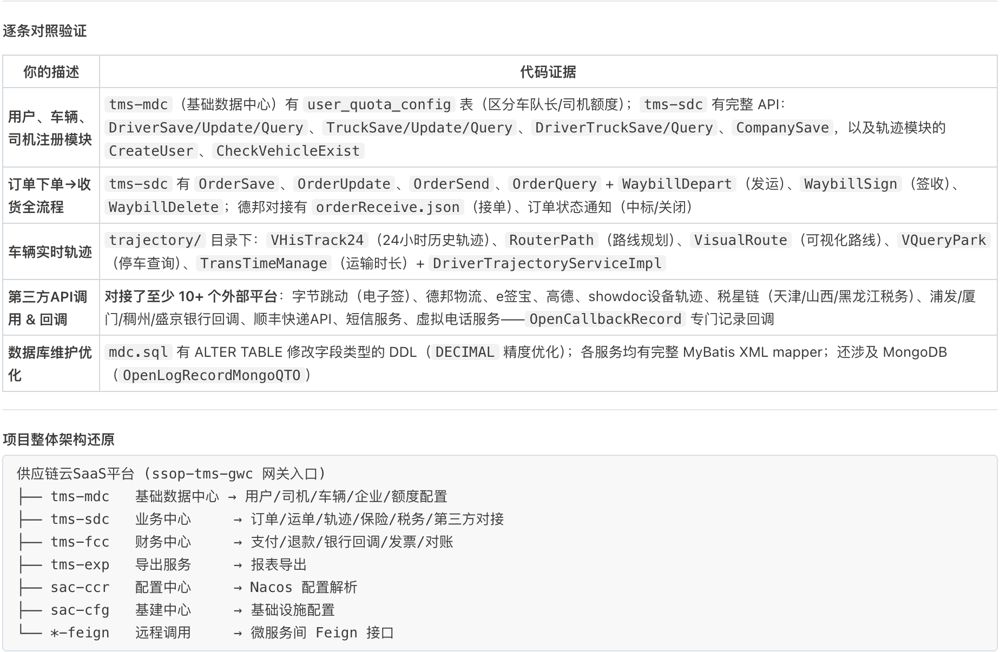

👤 自我介绍
我叫张怡琳，大学学的是国际金融，后来转行做开发，从前端到后端走了一条完整的全栈路径。
前端我独立负责过一个二手机械CRM系统，Vue 3加Element Plus，我主导了整个前端架构，包括三栏多Tab工作台、9阶段意向跟进流程、KeepAlive加锁机制解决多详情对比的交互问题，上线后销售团队一直在用。
后端我在怡亚通TMS项目里负责翔和翎三方对接模块，核心是用Spring Event加异步事件，把货主、司机、车辆、运单这些数据在本地事务提交后推送到翔和翎。我写了32个API的参数组装逻辑，鉴权用MD5加时间戳签名，还独立负责了人车合照审核闭环，从数据库字段到事件触发再到回调落库，整条链路我跟下来的。
因为两端都实际做过，我做后端的时候会从前端怎么调用、需要什么数据的角度去设计接口，做前端的时候也理解后端在性能和一致性上的约束。这个全栈视角是我和单一栈开发者最大的区别。
🛠️ 技术栈
Vue 3
Vite
Element Plus
Pinia
Vue Router
Axios
ECharts
Socket.io
Spring Boot
MyBatis-Plus
MySQL
Redis
MongoDB
RabbitMQ
Nacos
XXL-Job
Spring Event
Git
🖥️ 前端项目
CRM销售管理系统
前端负责人，独立完成 | Vue 3 + Vite + Element Plus + Pinia
为二手工业设备交易平台（51panhuo.com）独立设计并开发内部CRM前端。系统采用三栏布局（菜单/列表/详情），基于Pinia + KeepAlive实现多Tab详情缓存，设计并落地9阶段意向状态机、自动4K等级判定引擎、AXB隐私号联系卖家等核心模块。构建60+可复用组件库，使用分级HTTP轮询策略实现准实时数据更新。
Vue 3
Vite
Element Plus
Pinia
ECharts
Socket.io
- 多Tab缓存架构：设计并实现中栏/右栏双Tab系统，由Pinia useIndexStore统一调度，支持同类页面覆盖、锁定多开、refreshTab布尔翻转联动刷新，配合KeepAlive保持页面状态，解决B端高频操作下的状态管理难题
- 9阶段意向状态机：实现初挖、深挖、配货、报价、订金、成交、关闭全流程状态流转，报价通过创建特殊类型跟进记录（type='50'）实现审计留痕
- 4K等级自动判定引擎：设计9项必填项检查规则，自动驱动客户等级升降，规则引擎化
- 隐私号安全方案：集成阿里云AXB中间号，销售联系卖家时看不到真实号码，通话后强制留机况记录，解决销售私联风控问题
- 分级轮询策略：提醒类数据10s短轮询，看板数据100s轮询，核心业务列表靠操作联动事件刷新，规避WebSocket复杂度
技术亮点：复杂业务状态机落地 · Pinia + KeepAlive多Tab缓存体系 · AXB隐私号安全方案 · 数据驱动等级判定 · 轮询分级策略
⚙️ 后端项目
怡亚通 TMS × 翔和翎物流平台三方对接
后端开发 | 2025.04 | 分支 xhl.1.0.0.zyl | 提交约 7400+ 行
负责MDC/SDC双模块与翔和翎物流平台的全链路数据对接，覆盖货主、司机、车辆、订单、运单等核心业务数据同步，基于Spring Event异步事件驱动，保证本地事务与外部同步的数据一致性。
Spring Boot
MyBatis-Plus
MySQL
Spring Event
@Async
@TransactionalEventListener
MD5签名
- 32个API全链路联调：设计并实现MDC/SDC双模块出站客户端，覆盖货主、司机、车辆、订单、运单、发票、费用等32个API请求模型与参数组装，完成与翔和翎全链路联调
- 事件驱动异步同步：基于Spring Event + @Async与@TransactionalEventListener(AFTER_COMMIT)，在本地事务提交后异步推送数据至三方，避免阻塞主业务事务
- 签名鉴权与回调：实现MD5 + timestamp签名鉴权（AppSignUtil），出站自动带sign，入站验签防伪造；完成货主、司机、车辆、实名、人车合照等5类审核结果回调落库
- 人车合照审核闭环：扩展car_license_audit表人车合照审核字段，打通"审核通过→事件触发→三方人车关系同步→回调更新本地状态"完整业务闭环
- 联调验证：编写ApiAccessTest分阶段验证，处理文档与实网行为不一致问题，联调期间修复运单接口URL混用等关键缺陷
核心设计决策：为什么用事件驱动而非直接同步调HTTP？——货主注册、运单签收等操作有自己的主事务，如果在业务方法里直接调翔和翎HTTP，对方超时会把主事务也拖长。用@TransactionalEventListener(AFTER_COMMIT)保证本地事务提交后才发事件，@Async用独立线程池发HTTP，主业务不受三方接口影响。
